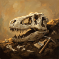
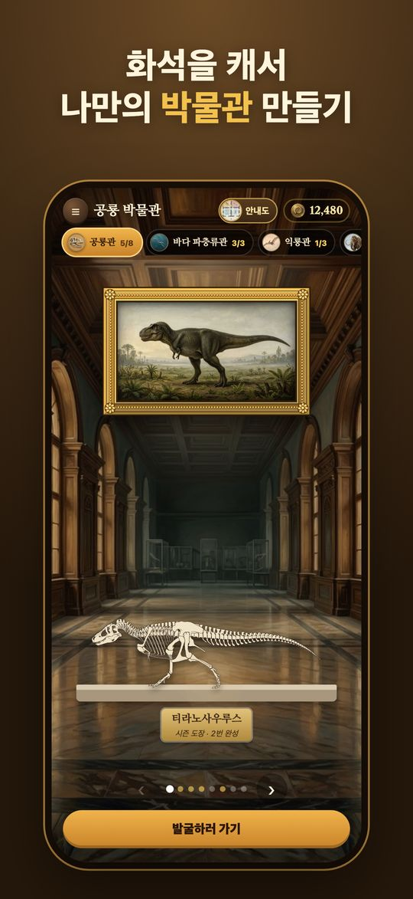
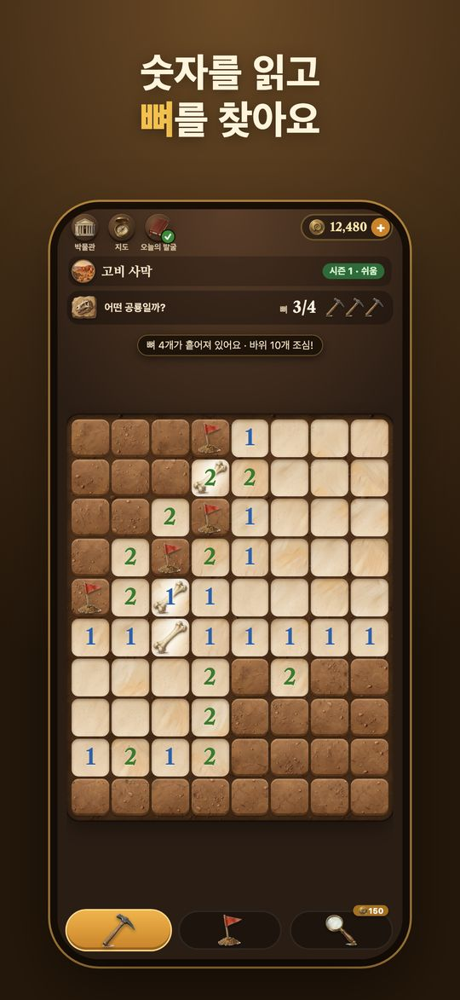
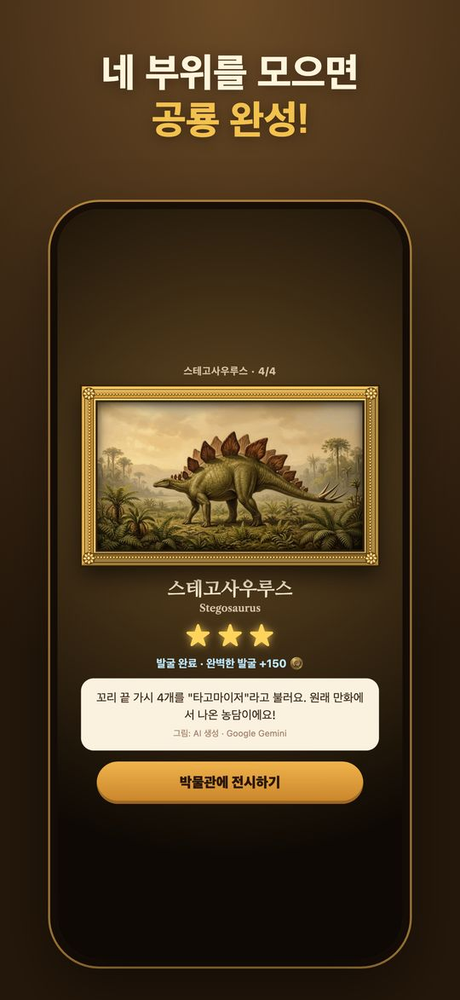
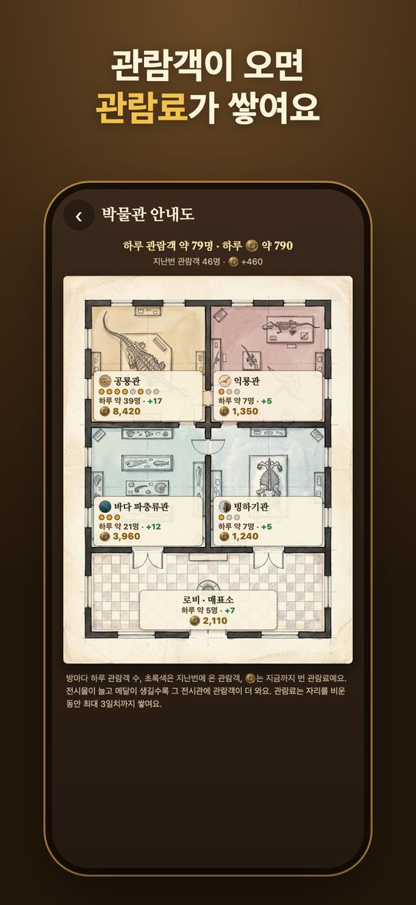

화석 발굴: 공룡 박물관
화석을 캐서 나만의 공룡 박물관을 채워요
곧 출시
곡괭이를 들고 고생물학자가 되어 보세요. 발굴지 흙 속에는 화석 뼈가 숨어 있어요. 파낸 칸의 숫자는 주변에 바위가 몇 개 있는지 알려 줘요. 숫자를 보고 어디를 파도 안전한지 추리해 보세요. 바위를 찍으면 곡괭이가 상하고, 세 번 찍으면 발굴이 끝나요.
게임 화면




모으는 것
- 진짜 고생물 17종: 티라노사우루스, 트리케라톱스, 스테고사우루스, 벨로키랍토르, 프테라노돈, 털매머드 등
- 발굴할 때마다 머리, 몸통, 다리, 꼬리 중 한 부위가 나와요. 네 부위를 모두 찾으면 골격이 완성되고, 복원 그림과 재미있는 이야기가 나와요
- 더 어려운 시즌에 다시 완성하면 받는 메달과 황금 화석
나만의 박물관
- 완성한 골격은 내 박물관에 전시돼요
- 관람객이 찾아와 관람료를 내요. 전시물이 많을수록 관람객도 늘어요
- 박물관 안내도에서 어느 전시관이 인기인지 볼 수 있어요
세계 곳곳의 발굴지
- 실제 화석 산지: 북아메리카 서부, 몽골 고비 사막, 유럽 쥬라기 바다, 북아메리카 내해, 빙하기의 땅
- 발굴지마다 시즌이 있어 바위와 뼈가 늘어나며 점점 어려워져요
- 모두에게 같은 땅이 나오는 오늘의 발굴
- 박물관이 번 관람료로 탐사 허가증을 사서 새 발굴지를 열어요
공정하고 친절하게
- 모든 판은 추리만으로 풀 수 있어요. 찍기는 필요 없어요
- 발굴 사이에 광고가 나오지 않아요. 무료 버전은 발굴 화면에 작은 배너만 있고, 동영상은 원할 때만 봐요
- 관람료(동전)는 게임으로만 벌고 돈으로 팔지 않아요. 확률에 돈을 쓰는 상품은 없어요
- 인터넷 없이도 끝까지 즐길 수 있어요
화석 발굴 프로 (한 번 결제)
- 새 발굴지 3곳을 바로 열기: 바다 파충류, 익룡, 빙하기 동물
- 배너 광고 없음, 광고 없이 보상 받기, 매일 동전 선물